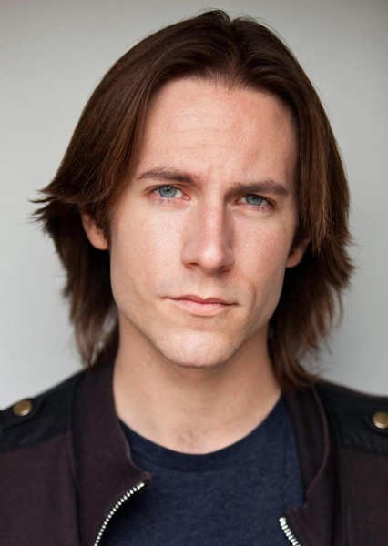

Matthew Mercer
Datos generales

| Nombre completo |
Nacionalidad |
Web |
| Matthew Christopher Miller |
Estadounidense |
Matthew Merce Online |
| 41 años. |
Profesión |
| Estadounidense |
Actor de voz y narrador |
Biografía
Mercer comenzó su carrera en la escuela secundaria haciendo walla en inglés
y personajes adicionales en varios animes japoneses y desde entonces ha trabajado con una variedad de medios,
incluidos dibujos animados, videojuegos y comerciales de radio. Ha sido invitado a convenciones de todo el mundo,
organizando eventos como Anime Expo y Anime Matsuri. Su trabajo se ha expandido a una multitud de roles en caricaturas,
videojuegos y comerciales de radio. Dirigió y produjo la serie web There Will Be Brawl, basado en la serie de videojuegos Super Smash Bros.,
donde proporcionó las voces de Kirby y Meta Knight y hace el papel de Ganondorf. Mercer también produjo la serie web Fear News with the Last Girl
y actúa en varios shows de Geek & Sundry y Nerdist.
Méritos Académicos
- Escuela Secundaria de Agoura
Méritos Profesionales
Como actor de doblaje
Series Animadas
- Beware the Batman - Joseph "Ice Pick Joe" Crimple.
- DC Super Friends - Superman, Dos Caras.
- Escuela Secundaria de Agoura
- Prodigiosa: Las aventuras de Ladybug Voces adicionales.
- NFL Rush Zone - Sudden Death, Texans Rusher, Buccaneers Rusher, Capitán Anticorian.
- Thundercats - Tygra, Kask, Driller, voces adicionales1.
- Wabbit - Pie Grande.
- Persona 4 The Animation - Kanji Tatsumi (Capítulos 13 - 26).
- Persona 5 The Animation - Yusuke Kitagawa.
Peliculas Animadas
- Avengers Confidential: Black Widow & Punisher - Tony Stark/Iron Man, Clint Barton/Ojo de Halcón
- Batman: Bad Blood - Hellhound, Chuckie Sol.
- Batman Unlimited: Animal Instincts - Mech Guardia 1, Wealthy Jocky.
- Iron Man: Rise of Technovore - Tony Stark/Iron Man.
- Justice League: War - Guardia.
- Marvel Super Hero Adventures: Frost Fight! - Capitán América, Gingerbread Men.
- Monsters University - Voces adicionales.
- Resident Evil: Damnation - Leon S. Kennedy.
- Resident Evil Vendetta - Leon S. Kennedy.
- Resident Evil: Death Island - Leon S. Kennedy.
Videojuegos
- Overwatch - Cole Cassidy.
- Titanfall 2 - Jack Cooper.
- World of Warcraft: Legion - Aluneth.
- Resident Evil 6 - Leon S. Kennedy.
- Fire Emblem: Awakening - Chrom.
- Fire Emblem Fates - Ryoma, Azama, Shigure.
- Fire Emblem Heroes - Chrom, Ryoma, Azama, Shigure.
- Phoenix Wright: Ace Attorney - Spirit of Justice - Nayuta Sahdmadhi.
- Batman: Arkham Knight - Tim Drake.
- Minecraft: Story Mode - Aiden, Chico escolar, Otis, Viejo granjero, TNT Dustin.
- Persona 5 - Yusuke Kitagawa.
- Fallout 4 - MacCready.
- Xenoblade Chronicles X - Lao.
- Stella Glow - Klaus
- Super Smash Bros Ultimate - Chrom.
- Epic Seven - Basar, Corvus, Dark Corvus, Jecht.
- Pillars of Eternity - Edér Teylecg.
- Yakuza: Like a Dragon - Goro Majima.
- Monster Hunter: World - Líder del equipo de campo.
- Final Fantasy VII Remake - Red XIII/Nanaki.
- Fortnite: Battle Royale - Midas.
- The Legend Of Zelda: Tears Of The Kingdom - Ganondorf.
En "Critical Role"
- Temporada 1 - Director de juego.
- Temporada 2 - Director de juego.
- Temporada 3 - Director de juego.
Como diseñador de Juegos
- Critical Role: Tal'Dorei Campaign Setting, con Green Ronin Publishing.
- Explorer's Guide to Wildemount, con Wizards of the Coast.
- Tal'Dorei Campaign Setting Reborn, con Critical Role Productions.
- Critical Role: Call of the Netherdeep, con Wizards of the Coast.
Biliografía
Wikipedia, IMDb.